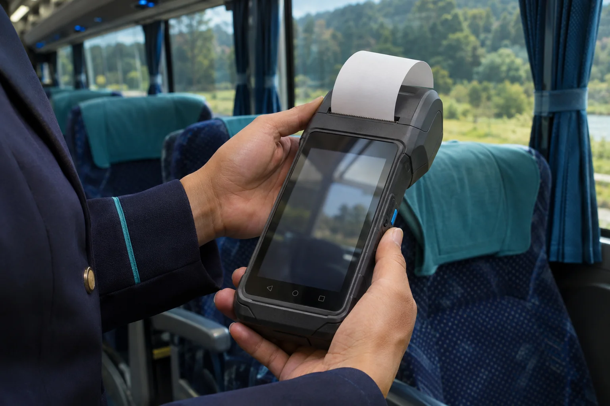

Venta a bordo con KLAP
Con este sistema satélite de Pasajes, el bus opera como una agencia con caja propia. Desde el terminal KLAP, la tripulación vende por tramo y lleva el control de los pasajeros del servicio.
- Venta y cobro
- En rutas cortas y de larga distancia, la tripulación cobra en efectivo o con tarjeta e imprime el boleto en el mismo equipo.
- Pasajeros del servicio
- El personal a bordo consulta la nómina de la salida y verifica los pasajes emitidos.
- Arqueo y rendición
- Al cierre, la empresa revisa los cobros por medio de pago, los gastos del viaje y el efectivo que debe entregar la tripulación.